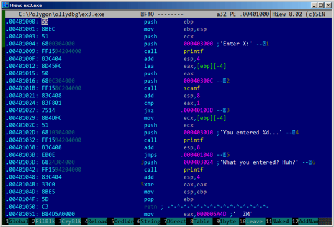

第七章
scanf()
现在我们来使用scanf()。
7.1 简单的例子
#include <stdio.h>
int main()
{
int x;
printf ("Enter X:
");
scanf ("%d", &x);
printf ("You entered %d...
", x);
return 0;
};
如今使用scanf()作为用户交互非常不明智，但是我们还是可以说明如何把指针传递给int变量。
7.1.1 关于指针
指针是计算机科学中最基础的概念之一。通常，大数组、结构或对象作为参数被传递给其它函数花费太大，而传递它们的地址要相对简单的多。此外：如果调用函数要修改作为参数传进来的数组或结构中的数据，并将其整体返回，那这种情况就太荒唐了。因此最简单的办法就是把数组或结构的地址传递给函数，让函数进行修改。
在C/C++中指针就是某处内存的地址。
在x86中，地址是以32位数表示的（占4字节）；在x86-64中是64位数（占8字节）。顺便一说，这也是为什么有些人在改用x86-64时感到愤怒——x64架构中所有的指针需要的空间是原来的两倍。
通过某种方法，只使用无类型指针也是可行的。例如标准C函数memcpy()，用于把一个区块复制到另外一个区块上，需要两个void*型指针作为输入，因为你无法预知，也无需知道要复制区块的类型，区块的大小才是重要的。
当函数需要一个以上的返回值时也经常用到指针（等到第十章再讲）。scanf()就是这样，函数除了要显示成功读入的字符个数外，还要返回全部值。
在C/C++中，指针类型只是用于在编译阶段进行类型检查。本质上，在已编译的代码中并不包含指针类型的信息。
7.1.2 x86
MSVC
MVSC 2010编译后得到下面代码
CONST SEGMENT
$SG3831 DB ’Enter X:’, 0aH, 00H
$SG3832 DB ’%d’, 00H
35
6.2. X86 CHAPTER 6. SCANF()
$SG3833 DB ’You entered %d...’, 0aH, 00H
CONST ENDS
PUBLIC _main
EXTRN _scanf:PROC
EXTRN _printf:PROC
; Function compile flags: /Odtp
_TEXT SEGMENT
_x$ = -4 ; size = 4
_main PROC
push ebp
mov ebp, esp
push ecx
push OFFSET $SG3831 ; ’Enter X:’
call _printf
add esp, 4
lea eax, DWORD PTR _x$[ebp]
push eax
push OFFSET $SG3832 ; ’%d’
call _scanf
add esp, 8
mov ecx, DWORD PTR _x$[ebp]
push ecx
push OFFSET $SG3833 ; ’You entered %d...’
call _printf
add esp, 8
; return 0
xor eax, eax
mov esp, ebp
pop ebp
ret 0
_main ENDP
_TEXT ENDS
X是局部变量。
C/C++标准告诉我们它只对函数内部可见，无法从外部访问。习惯上，局部变量放在栈中。也可能有其他方法，但在x86中是这样。
函数序言后下一条指令PUSH ECX目的并不是要存储ECX的状态（注意程序结尾没有与之相对的POP ECX）。
事实上这条指令仅仅是在栈中分配了4字节用于存储变量x。
变量x可以用宏 _x$ 来访问（等于-4），EBP寄存器指向当前栈帧。
在一个函数执行时，EBP将指向当前栈帧，通过EBP+offset来访问局部变量和函数参数也是可行的。
也可以使用ESP寄存器达到相同目的，但由于它经常变化所以使用不方便。EBP值保存了进入函数时ESP的值。
下面是一个非常典型的32位栈帧结构
...
EBP-8 local variable #2, marked in IDA as var_8
EBP-4 local variable #1, marked in IDA as var_4
EBP saved value of EBP
EBP+4 return address
EBP+8 argument#1, marked in IDA as arg_0
EBP+0xC argument#2, marked in IDA as arg_4
EBP+0x10 argument#3, marked in IDA as arg_8
...
在我们的例子中，scanf()有两个参数。
第一个参数是指向"%d"的字符串指针，第二个是变量x的地址。
首先，lea eax, DWORD PTR _x$[ebp]指令将变量x的地址放入EAX寄存器。LEA作用是"取有效地址"，通常用来生成一个地址（A.6.2）。
可以说，LEA在这里只是把EBP的值与宏 _x$的值相加，并存储在EAX寄存器中。
lea eax, [ebp-4]的作用也是一样。
EBP的值减去4，结果放在EAX寄存器中。接着EAX寄存器的值被压入栈中，再调用printf()。
之后，printf()被调用。第一个参数是一个字符串指针："You entered %d … "。
第二个参数是通过mov ecx, [ebp-4]使用的，这个指令把变量x的内容传给ECX而不是它的地址。
然后，ECX的值放入栈中，接着最后一次调用printf()。
7.1.3 MSVC+OllyDbg
我们在OllyDbg中使用这个例子。首先载入程序，按F8直到进入我们的可执行文件而不是ntdll.dll。往下滚动屏幕找到main()。点击第一条指令（PUSH EBP），按F2设置断点，再按F9执行，触发main()开始处的断点。
让我们来跟随到准备变量x的地址的位置。
图7.1 OllyDbg：计算局部变量的地址
可以右击寄存器窗口的EAX，再点击"堆栈窗口中跟随"。这个地址会在堆栈窗口中显示。观察，这是局部栈中的一个变量。我在图中用红色箭头标出。这里是一些无用数据（0x77D478）。PUSH指令将会把这个栈元素的地址压入栈中。然后按F8直到scanf()函数执行完。在scanf()执行时，我们要在命令行窗口中输入，例如输入123。

图7.2 命令行输出
scanf()在这里执行。
图7.3：OllyDbg：scanf()执行
scanf()在EAX中返回1，这意味着成功读入了一个值。现在我们关心的那个栈元素中的值是0x7B(123)。
接下来，这个值从栈中复制到ECX寄存器中，然后传递给printf()。
图7.4：OllyDbg：准备把值传递给printf()
GCC
让我们在Linux GCC 4.4.1下编译这段代码
main proc near
var_20 = dword ptr -20h
var_1C = dword ptr -1Ch
var_4 = dword ptr -4
push ebp
mov ebp, esp
and esp, 0FFFFFFF0h
sub esp, 20h
mov [esp+20h+var_20], offset aEnterX ; "Enter X:"
call _puts
mov eax, offset aD ; "%d"
lea edx, [esp+20h+var_4]
mov [esp+20h+var_1C], edx
mov [esp+20h+var_20], eax
call ___isoc99_scanf
mov edx, [esp+20h+var_4]
mov eax, offset aYouEnteredD___ ; "You entered %d...\n"
mov [esp+20h+var_1C], edx
mov [esp+20h+var_20], eax
call _printf
mov eax, 0
leave
retn
main endp
GCC把第一个调用的printf()替换成了puts()，原因在3.4.3节中讲过了。
和在MSVC例子中一样，参数都是用MOV指令放入栈中。
By the way
顺带一说，这个简单的例子是编译器将C/C++表达式翻译成指令列表的真实演示。C/C++表达式间没任何联系。编译器并没有神奇之处，只不过把编程语言逐行翻译成对应的机器码代码而已。
7.1.4 x64
和原来一样，只是传递参数时不使用栈而使用寄存器。
MSVC
_DATA SEGMENT
$SG1289 DB ’Enter X:’, 0aH, 00H
$SG1291 DB ’%d’, 00H
$SG1292 DB ’You entered %d...’, 0aH, 00H
_DATA ENDS
_TEXT SEGMENT
x$ = 32
main PROC
$LN3:
sub rsp, 56
lea rcx, OFFSET FLAT:$SG1289 ; ’Enter X:’
call printf
lea rdx, QWORD PTR x$[rsp]
lea rcx, OFFSET FLAT:$SG1291 ; ’%d’
call scanf
mov edx, DWORD PTR x$[rsp]
lea rcx, OFFSET FLAT:$SG1292 ; ’You entered %d...’
call printf
; return 0
xor eax, eax
add rsp, 56
ret 0
main ENDP
_TEXT ENDS
GCC
.LC0:
.string "Enter X:"
.LC1:
.string "%d"
.LC2:
.string "You entered %d...
"
main:
sub rsp, 24
mov edi, OFFSET FLAT:.LC0 ; "Enter X:"
call puts
lea rsi, [rsp+12]
mov edi, OFFSET FLAT:.LC1 ; "%d"
xor eax, eax
call __isoc99_scanf
mov esi, DWORD PTR [rsp+12]
mov edi, OFFSET FLAT:.LC2 ; "You entered %d...
"
xor eax, eax
call printf
; return 0
xor eax, eax
add rsp, 24
ret
7.1.5 ARM
keil优化+thumb mode
.text:00000042 scanf_main
.text:00000042
.text:00000042 var_8 = -8
.text:00000042
.text:00000042 08 B5 PUSH {R3,LR}
.text:00000044 A9 A0 ADR R0, aEnterX ; "Enter X:
"
.text:00000046 06 F0 D3 F8 BL __2printf
.text:0000004A 69 46 MOV R1, SP
.text:0000004C AA A0 ADR R0, aD ; "%d"
.text:0000004E 06 F0 CD F8 BL __0scanf
.text:00000052 00 99 LDR R1, [SP,#8+var_8]
.text:00000054 A9 A0 ADR R0, aYouEnteredD___ ; "You entered %d...
"
.text:00000056 06 F0 CB F8 BL __2printf
.text:0000005A 00 20 MOVS R0, #0
.text:0000005C 08 BD POP {R3,PC}
必须把一个指向int变量的指针传递给scanf()，这样才能通过这个指针返回一个值。Int是一个32位的值，所以我们在内存中需要4字节存储，并且正好符合32位的寄存器。局部变量x的空间分配在栈中，IDA把他命名为var_8。然而并不需要分配空间，因为栈指针(SP)指向的空间可以被立即使用。所以栈指针的值被复制到R1寄存器中，然后和格式化字符串一起送入scanf()。然后LDR指令将这个值从栈中送入R1寄存器，用以送入printf()中。
用ARM-mode和Xcode LLVM编译的代码区别不大，这里略去。
ARM64
.LC0:
.string "Enter X:"
.LC1:
.string "%d"
.LC2:
.string "You entered %d...\n"
scanf_main:
; subtract 32 from SP, then save FP and LR in stack frame:
stp x29, x30, [sp, -32]!
; set stack frame (FP=SP)
add x29, sp, 0
; load pointer to the "Enter X:" string
adrp x0, .LC0
add x0, x0, :lo12:.LC0
; X0=pointer to the "Enter X:" string
; print it:
bl puts
; load pointer to the "\%d" string:
adrp x0, .LC1
add x0, x0, :lo12:.LC1
; find a space in stack frame for "x" variable (X1=FP+28):
add x1, x29, 28
; X1=address of "x" variable'
; pass the address to scanf() and call it:
bl __isoc99_scanf
; load 32-bit value from the variable in stack frame:
ldr w1, [x29,28]
; W1=x
; load pointer to the "You entered \%d...\n" string
; printf() will take text string from X0 and "x" variable from X1 (or W1)
adrp x0, .LC2
add x0, x0, :lo12:.LC2
bl printf
; _return 0
mov w0, 0
; restore FP and LR, then add 32 to SP:
ldp x29, x30, [sp], 32
ret
在栈帧上申请了32字节空间，比它需要的要大，可能是因为内存地址对齐问题？最有趣的是寻找栈帧上x变量的空间(代码22行)，为什么是加28?因为编译器是在栈帧的结束而不是开始的时间决定变量的空间。传递给scanf()的地址上储存这用户输入的值。32位值的类型是int，在代码27行中拿到然后传递给printf()。
7.1.6 MIPS
用$sp+24指向栈上申请的x变量的地址，然后将地址传给scanf()，用户输入的值使用LW(Load Word)指令传递给printf()。
Listing 7.4: Optimizing GCC 4.4.5 (assembly output)
$LC0:
$LC1:
$LC2:
.ascii "Enter X:\000"
.ascii "%d\000"
.ascii "You entered %d...\012\000"
main:
; function prologue:
lui $28,%hi(__gnu_local_gp)
addiu $sp,$sp,-40
addiu $28,$28,%lo(__gnu_local_gp)
sw $31,36($sp)
; call puts():
lw $25,%call16(puts)($28)
lui $4,%hi($LC0)
jalr $25
addiu $4,$4,%lo($LC0) ; branch delay slot
; call scanf():
lw $28,16($sp)
lui $4,%hi($LC1)
lw $25,%call16(__isoc99_scanf)($28)
; set 2nd argument of scanf(), $a1=$sp+24:
addiu $5,$sp,24
jalr $25
addiu $4,$4,%lo($LC1) ; branch delay slot
; call printf():
lw $28,16($sp)
; set 2nd argument of printf(),
; load word at address $sp+24:
IDA 中显示的栈帧情况如下：
.text:00000000 main:
.text:00000000
.text:00000000 var_18 = -0x18
.text:00000000 var_10 = -0x10
.text:00000000 var_4 = -4
.text:00000000
; function prologue:
.text:00000000 lui $gp, (__gnu_local_gp >> 16)
.text:00000004 addiu $sp, -0x28
.text:00000008 la $gp, (__gnu_local_gp & 0xFFFF)
.text:0000000C sw $ra, 0x28+var_4($sp)
.text:00000010 sw $gp, 0x28+var_18($sp)
; call puts():
.text:00000014 lw $t9, (puts & 0xFFFF)($gp)
.text:00000018 lui $a0, ($LC0 >> 16) # "Enter X:"
.text:0000001C jalr $t9
.text:00000020 la $a0, ($LC0 & 0xFFFF) # "Enter X:" ; branch delay slot
; call scanf():
.text:00000024 lw $gp, 0x28+var_18($sp)
.text:00000028 lui $a0, ($LC1 >> 16) # "%d"
.text:0000002C lw $t9, (__isoc99_scanf & 0xFFFF)($gp)
; set 2nd argument of scanf(), $a1=$sp+24:
.text:00000030 addiu $a1, $sp, 0x28+var_10
.text:00000034 jalr $t9 ; branch delay slot
.text:00000038 la $a0, ($LC1 & 0xFFFF) # "%d"
; call printf():
.text:0000003C lw $gp, 0x28+var_18($sp)
; set 2nd argument of printf(),
; load word at address $sp+24:
.text:00000040 lw $a1, 0x28+var_10($sp)
.text:00000044 lw $t9, (printf & 0xFFFF)($gp)
.text:00000048 lui $a0, ($LC2 >> 16) # "You entered %d...\n"
.text:0000004C jalr $t9
.text:00000050 la $a0, ($LC2 & 0xFFFF) # "You entered %d...\n" ; branch delay slot
; function epilogue:
.text:00000054 lw $ra, 0x28+var_4($sp)
; set return value to 0:
.text:00000058 move $v0, $zero
; _return:
.text:0000005C jr $ra
.text:00000060 addiu $sp, 0x28 ; branch delay slot
7.2 全局变量
如果之前的例子中的x变量不再是本地变量而是全局变量呢？那么就有可能从任何地方访问它，不仅仅是函数体，全局变量被认为anti-pattern(通常被认为是一个不好的习惯)，但是为了试验，我们可以这样做。
#include <stdio.h>
int x;
int main()
{
printf ("Enter X:
");
scanf ("%d", &x);
printf ("You entered %d...
", x);
return 0;
};
7.2.1 MSVC: x86
_DATA SEGMENT
COMM _x:DWORD
$SG2456 DB ’Enter X:’, 0aH, 00H
$SG2457 DB ’%d’, 00H
$SG2458 DB ’You entered %d...’, 0aH, 00H
_DATA ENDS
PUBLIC _main
EXTRN _scanf:PROC
EXTRN _printf:PROC
; Function compile flags: /Odtp
_TEXT SEGMENT
_main PROC
push ebp
mov ebp, esp
push OFFSET $SG2456
call _printf
add esp, 4
push OFFSET _x
push OFFSET $SG2457
call _scanf
add esp, 8
mov eax, DWORD PTR _x
push eax
push OFFSET $SG2458
call _printf
add esp, 8
xor eax, eax
pop ebp
ret 0
_main ENDP
_TEXT ENDS
现在x变量被定义为在_DATA部分，局部堆栈不允许再分配任何内存，除了直接访问内存所有通过栈的访问都不被允许。在执行的文件中全局变量还未初始化(实际上，我们为什么要在执行文件中为未初始化的变量分配一块？)但是当访问这里时，系统会在这里分配一块0值。
现在让我们来分析变量的分配。
int x=10; // default value
我们得到:
_DATA SEGMENT
_x DD 0aH
...
这里我们看见一个双字节的值0xA(DD 表示双字节 = 32bit)
如果你在IDA中打开compiled.exe，你会发现x变量被放置在_DATA块的开始处，接着你就会看见文本字符串。
如果你在IDA中打开之前例子中的compiled.exe中X变量没有定义的地方，你就会看见像这样的东西:
.data:0040FA80 _x dd ? ; DATA XREF: _main+10
.data:0040FA80 ; _main+22
.data:0040FA84 dword_40FA84 dd ? ; DATA XREF: _memset+1E
.data:0040FA84 ; unknown_libname_1+28
.data:0040FA88 dword_40FA88 dd ? ; DATA XREF: ___sbh_find_block+5
.data:0040FA88 ; ___sbh_free_block+2BC
.data:0040FA8C ; LPVOID lpMem
.data:0040FA8C lpMem dd ? ; DATA XREF: ___sbh_find_block+B
.data:0040FA8C ; ___sbh_free_block+2CA
.data:0040FA90 dword_40FA90 dd ? ; DATA XREF: _V6_HeapAlloc+13
.data:0040FA90 ; __calloc_impl+72
.data:0040FA94 dword_40FA94 dd ? ; DATA XREF: ___sbh_free_block+2FE
被_x替换了？其它变量也并未要求初始化，这也就是说在载入exe至内存后，在这里有一块针对所有变量的空间，并且还有一些随机的垃圾数据。但在exe中这些没有初始化的变量并不影响什么，比如它适合大数组。
7.2.2 MSVC: x86 + OllyDbg
到这里事情就变得简单了
表7.5 OllyDbg: scanf()执行后
变量都在data部分里，在PUSH指令(压入x的地址)被执行后，地址将会在栈中显示，那么右击元组数据，点击"Fllow in dump"，然后变量就会在左侧内存窗口显示.
在命令行窗口中输入123后，这里就会显示0x7B
但是为什么第一个字节是7B?合理的猜测，这里会有一组00 00 7B，被称为是字节顺序，然后在x86中使用的是小端，也就是说低位字节先写，高位字节后写。
回到例子中，这里的32-bit值就会载入到EAX中，然后被传递给printf().
X变量地址是0xDC3390。在OllyDbg中我们看进程内存映射(Alt-M)，然后发现这个地址在PE文件.data结构处。
表7.6: OllyDbg 进程内存映射
7.2.3 GCC: x86
这和linux中几乎是一样的，除了segment的名称和属性:未初始化变量被放置在_bss部分。
在ELF文件格式中，这部分数据有这样的属性:
; Segment type: Uninitialized
; Segment permissions: Read/Write
如果静态的分配一个值，比如10，它将会被放在_data部分，这部分有下面的属性:
; Segment type: Pure data
; Segment permissions: Read/Write
7.2.4 MSVC: x64
_DATA SEGMENT
COMM x:DWORD
$SG2924 DB ’Enter X:’, 0aH, 00H
$SG2925 DB ’%d’, 00H
$SG2926 DB ’You entered %d...’, 0aH, 00H
_DATA ENDS
_TEXT SEGMENT
main PROC
$LN3:
sub rsp, 40
lea rcx, OFFSET FLAT:$SG2924 ; ’Enter X:’
call printf
lea rdx, OFFSET FLAT:x
lea rcx, OFFSET FLAT:$SG2925 ; ’%d’
call scanf
mov edx, DWORD PTR x
lea rcx, OFFSET FLAT:$SG2926 ; ’You entered %d...’
call printf
; return 0
xor eax, eax
add rsp, 40
ret 0
main ENDP
_TEXT ENDS
几乎和x86中的代码是一样的，注意x变量的地址传递给scanf()用的是LEA指令，尽管第二处传递给printf()变量时用的是MOV指令，"DWORD PTR"——是汇编语言中的一部分(和机器码没有联系)。这就表示变量数据类型是32-bit，于是MOV指令就被编码了。
7.2.5 ARM:Optimizing Keil 6/2013 (Thumb mode)
.text:00000000 ; Segment type: Pure code
.text:00000000 AREA .text, CODE
...
.text:00000000 main
.text:00000000 PUSH {R4,LR}
.text:00000002 ADR R0, aEnterX ; "Enter X:
"
.text:00000004 BL __2printf
.text:00000008 LDR R1, =x
.text:0000000A ADR R0, aD ; "%d"
.text:0000000C BL __0scanf
.text:00000010 LDR R0, =x
.text:00000012 LDR R1, [R0]
.text:00000014 ADR R0, aYouEnteredD___ ; "You entered %d...
"
.text:00000016 BL __2printf
.text:0000001A MOVS R0, #0
.text:0000001C POP {R4,PC}
...
.text:00000020 aEnterX DCB "Enter X:",0xA,0 ; DATA XREF: main+2
.text:0000002A DCB 0
.text:0000002B DCB 0
.text:0000002C off_2C DCD x ; DATA XREF: main+8
.text:0000002C ; main+10
.text:00000030 aD DCB "%d",0 ; DATA XREF: main+A
.text:00000033 DCB 0
.text:00000034 aYouEnteredD___ DCB "You entered %d...",0xA,0 ; DATA XREF: main+14
.text:00000047 DCB 0
.text:00000047 ; .text ends
.text:00000047
...
.data:00000048 ; Segment type: Pure data
.data:00000048 AREA .data, DATA
.data:00000048 ; ORG 0x48
.data:00000048 EXPORT x
.data:00000048 x DCD 0xA ; DATA XREF: main+8
.data:00000048 ; main+10
.data:00000048 ; .data ends
那么，现在x变量以某种方式变为全局的，现在被放置在另一个部分中。命名为data块(.data)。有人可能会问，为什么文本字符串被放在了代码块(.text)，而且x可以被放在这？因为这是变量，而且根据它的定义，它可以变化，也有可能会频繁变化，不频繁变化的代码块可以被放置在ROM中，变化的变量在RAM中，当有ROM时在RAM中储存不变的变量是不利于节约资源的。
此外，RAM中数据部分常量必须在之前初始化，因为在RAM使用后，很明显，将会包含杂乱的信息。
继续向前，我们可以看到，在代码片段，有个指针指向X变量(0ff_2C)。然后所有关于变量的操作都是通过这个指针。这也是x变量可以被放在远离这里地方的原因。所以他的地址一定被存在离这很近的地方。LDR指令在thumb模式下只可访问指向地址在1020bytes内的数据。同样的指令在ARM模式下——范围就达到了-4095bytes~ +4095bytes，也就是x变量地址一定要在这附近的原因。因为没法保证链接时会把这个变量放在附近，它甚至可能在外部存储芯片里！
另外，如果变量以const声明，Keil编译环境下则会将变量放在.constdata部分，大概从那以后，链接时就可以把这部分和代码块放在ROM里了。
7.2.6 ARM64
.comm x,4,4
.LC0:
.string "Enter X:"
.LC1:
.string "%d"
.LC2:
.string "You entered %d...\n"
f5:
; save FP and LR in stack frame:
stp x29, x30, [sp, -16]!
; set stack frame (FP=SP)
add x29, sp, 0
; load pointer to the "Enter X:" string:
adrp x0, .LC0
add x0, x0, :lo12:.LC0
bl puts
; load pointer to the "\%d" string:
adrp x0, .LC1
add x0, x0, :lo12:.LC1
; form address of x global variable:
adrp x1, x
add x1, x1, :lo12:x
bl __isoc99_scanf
; form address of x global variable again:
adrp x0, x
add x0, x0, :lo12:x
; load value from memory at this address:
ldr w1, [x0]
; load pointer to the "You entered \%d...\n" string:
adrp x0, .LC2
add x0, x0, :lo12:.LC2
bl printf
; _return 0
mov w0, 0
; restore FP and LR:
ldp x29, x30, [sp], 16
ret
本例中，x变量声明为了全局变量，它的地址通过 ADRP/ADD 指令对来计算。(代码 21 和 25 行).
7.2.7 MIPS
未初始化的全局变量
已初始化的全局变量
7.3 scanf()结果检查
正如我之前所见的，现在使用scanf()有点过时了，但是如过我们不得不这样做时，我们需要检查scanf()执行完毕时是否发生了错误。
#include <stdio.h>
int main()
{
int x;
printf ("Enter X:
");
if (scanf ("%d", &x)==1)
printf ("You entered %d...
", x);
else
printf ("What you entered? Huh?
");
return 0;
};
按标准，scanf()函数返回成功获取的字段数。
在我们的例子中，如果事情顺利，用户输入一个数字，scanf()将会返回1或0或者错误情况下返回EOF.
这里，我们添加了一些检查scanf()结果的c代码，用来打印错误信息:
按照预期的回显:
C:...>ex3.exe
Enter X:
123
You entered 123...
C:...>ex3.exe
Enter X:
ouch
What you entered? Huh?
7.3.1 MSVC: x86
我们可以得到这样的汇编代码(msvc2010):
lea eax, DWORD PTR _x$[ebp]
push eax
push OFFSET $SG3833 ; ’%d’, 00H
call _scanf
add esp, 8
cmp eax, 1
jne SHORT $LN2@main
mov ecx, DWORD PTR _x$[ebp]
push ecx
push OFFSET $SG3834 ; ’You entered %d...’, 0aH, 00H
call _printf
add esp, 8
jmp SHORT $LN1@main
$LN2@main:
push OFFSET $SG3836 ; ’What you entered? Huh?’, 0aH, 00H
call _printf
add esp, 4
$LN1@main:
xor eax, eax
调用函数(main())必须能够访问到被调用函数(scanf())的结果，所以callee把这个值留在了EAX寄存器中。
然后我们在"CMP EAX, 1"指令的帮助下，换句话说，我们将eax中的值与1进行比较。
JNE根据CMP的结果判断跳至哪，JNE表示(jump if Not Equal)
所以，如果EAX中的值不等于1，那么处理器就会将执行流程跳转到JNE指向的，在我们的例子中是$LN2@main，当流程跳到这里时，CPU将会带着参数"What you entered? Huh?"执行printf(),但是执行正常，就不会发生跳转，然后另外一个printf()就会执行，两个参数为"You entered %d…"及x变量的值。
因为第二个printf()并没有被执行，后面有一个JMP(无条件跳转)，就会将执行流程到第二个printf()后"XOR EAX, EAX"前，执行完返回0。
那么，可以这么说，比较两个值通常使用CMP/Jcc这对指令，cc是条件码，CMP比较两个值，然后设置processor flag，Jcc检查flags然后判断是否跳。
但是事实上，这却被认为是诡异的。但是CMP指令事实上,但是CMP指令实际上是SUB(subtract),所有算术指令都会设置processor flags,不仅仅只有CMP，当我们比较1和1时，1结果就变成了0，ZF flag就会被设定(表示最后一次的比较结果为0)，除了两个数相等以外，再没有其他情况了。JNE 检查ZF flag，如果没有设定就会跳转。JNE实际上就是JNZ(Jump if Not Zero)指令。JNE和JNZ的机器码都是一样的。所以CMP指令可以被SUB指令代替，几乎一切的都没什么变化。但是SUB会改变第一个数，CMP是"SUB without saving result".
7.3.2 MSVC: x86:IDA
现在是时候打开IDA然后尝试做些什么了，顺便说一句。对于初学者来说使用在MSVC中使用/MD是个非常好的主意。这样所有独立的函数不会从可执行文件中link，而是从MSVCR*.dll。因此这样可以简单明了的发现函数在哪里被调用。
当在IDA中分析代码时，建议一定要做笔记。比如在分析这个例子的时候，我们看到了JNZ将要被设置为error，所以点击标注，然后标注为"error"。另外一处标注在"exit":
.text:00401000 _main proc near
.text:00401000
.text:00401000 var_4 = dword ptr -4
.text:00401000 argc = dword ptr 8
.text:00401000 argv = dword ptr 0Ch
.text:00401000 envp = dword ptr 10h
.text:00401000
.text:00401000 push ebp
.text:00401001 mov ebp, esp
.text:00401003 push ecx
.text:00401004 push offset Format ; "Enter X:
"
.text:00401009 call ds:printf
.text:0040100F add esp, 4
.text:00401012 lea eax, [ebp+var_4]
.text:00401015 push eax
.text:00401016 push offset aD ; "%d"
.text:0040101B call ds:scanf
.text:00401021 add esp, 8
.text:00401024 cmp eax, 1
.text:00401027 jnz short error
.text:00401029 mov ecx, [ebp+var_4]
.text:0040102C push ecx
.text:0040102D push offset aYou ; "You entered %d...
"
.text:00401032 call ds:printf
.text:00401038 add esp, 8
.text:0040103B jmp short exit
.text:0040103D ; ---------------------------------------------------------------------------
.text:0040103D
.text:0040103D error: ; CODE XREF: _main+27
.text:0040103D push offset aWhat ; "What you entered? Huh?
"
.text:00401042 call ds:printf
.text:00401048 add esp, 4
.text:0040104B
.text:0040104B exit: ; CODE XREF: _main+3B
.text:0040104B xor eax, eax
.text:0040104D mov esp, ebp
.text:0040104F pop ebp
.text:00401050 retn
.text:00401050 _main endp
现在理解代码就变得非常简单了。然而过分的标注指令却不是一个好主意。
函数的一部分有可能也会被IDA隐藏:
我隐藏了两部分然后分别给它们命名:
.text:00401000 _text segment para public ’CODE’ use32
.text:00401000 assume cs:_text
.text:00401000 ;org 401000h
.text:00401000 ; ask for X
.text:00401012 ; get X
.text:00401024 cmp eax, 1
.text:00401027 jnz short error
.text:00401029 ; print result
.text:0040103B jmp short exit
.text:0040103D ; ---------------------------------------------------------------------------
.text:0040103D
.text:0040103D error: ; CODE XREF: _main+27
.text:0040103D push offset aWhat ; "What you entered? Huh?
"
.text:00401042 call ds:printf
.text:00401048 add esp, 4
.text:0040104B
.text:0040104B exit: ; CODE XREF: _main+3B
.text:0040104B xor eax, eax
.text:0040104D mov esp, ebp
.text:0040104F pop ebp
.text:00401050 retn
.text:00401050 _main endp
如果要显示这些隐藏的部分，我们可以点击数字上的+。
为了压缩"空间"，我们可以看到IDA怎样用图表代替一个函数的(见图6.7)，然后在每个条件跳转处有两个箭头，绿色和红色。绿色箭头代表如果跳转触发的方向，红色则相反。
当然可以折叠节点，然后备注名称,我像这样处理了3块(见图 6.8):
这个非常的有用。可以这么说，逆向工程师很重要的一点就是缩小他所有的信息。
图7.7: IDA 图形模式
图7.8: Graph mode in IDA with 3 nodes folded
7.3.3 MSVC: x86 + OllyDbg
让我们继续在OllyDbg中看这个范例程序，使它认为scanf()怎么运行都不会出错。
当本地变量地址被传递给scanf()时，这个变量还有一些垃圾数据。这里是0x4CD478:
图7.10 OllyDbg：传递变量地址给printf()
当scanf()执行时，我在命令行窗口输入了一些不是数字的东西，像"asdasd".scanf()结束后eax变为了0.也就意味着有错误发生:
图7.11 OllyDbg：scanf() 返回错误
我们也可以发现栈中的本地变量并没有发生变化，scanf()会在那里写入什么呢？其实什么都没有，只是返回了0.
现在让我们尝试修改这个程序，右击EAX，在选项中有个"set to 1"，这正是我们所需要的。
现在EAX是1了。那么接下来的检查就会按照我们的需求执行，然后printf()将会打印出栈上的变量。
按下F9我们可以在窗口中看到:

图7.9
实际上，5035128是栈上一个数据(0x4CD478)的十进制表示!
7.3.4 MSVC: x86 + Hlew
这也是一个关于可执行文件patch的简单例子，我们之前尝试patch程序，所以程序总是打印数字，不管我们输入什么。
假设编译时并没有使用/MD,我们可以在.text开始的地方找到main()函数，现在让我们在Hiew中打开执行文件。找到.text的开始处(enter,F8,F6,enter,enter)
我们可以看到这个:

图7.12:main()函数
Hiew 找到 ASCIIZ 字符串并显示，引入的函数名字也同样显示。
移动光标到地址 .00401027 (这里是 JNZ 指令, 我们需要绕过它), 按下 F3, 然后输入 “9090” (表示两个 NOP):
图7.13:Hiew 用两个NOP替换JNZ
然后按下F9(update),现在文件保存在了磁盘中，它将会按照我们希望的那样执行。
两个NOP可能看起来并不是那么完美，另一个方法是把0写在第二处（jump offset）,所以JNZ就可以总是跳到下一个指令了。
另外我们也可以这样做：替换第一个字节为EB，这样就不修改第二处（jump offset），这样就会无条件跳转，不管我们输入什么，错误信息都可以打印出来了。
7.3.5 MSVC: x64
因为我们这里处理的是无整型变量。在x86-64中还是32bit,我们可以看出32bit的寄存器(前缀为E)在这种情况下是怎样使用的,然而64bit的寄存也有被使用(前缀R)
_DATA SEGMENT
$SG2924 DB ’Enter X:’, 0aH, 00H
$SG2926 DB ’%d’, 00H
$SG2927 DB ’You entered %d...’, 0aH, 00H
$SG2929 DB ’What you entered? Huh?’, 0aH, 00H
_DATA ENDS
_TEXT SEGMENT
x$ = 32
main PROC
$LN5:
sub rsp, 56
lea rcx, OFFSET FLAT:$SG2924 ; ’Enter X:’
call printf
lea rdx, QWORD PTR x$[rsp]
lea rcx, OFFSET FLAT:$SG2926 ; ’%d’
call scanf
cmp eax, 1
jne SHORT $LN2@main
mov edx, DWORD PTR x$[rsp]
lea rcx, OFFSET FLAT:$SG2927 ; ’You entered %d...’
call printf
jmp SHORT $LN1@main
$LN2@main:
lea rcx, OFFSET FLAT:$SG2929 ; ’What you entered? Huh?’
call printf
$LN1@main:
; return 0
xor eax, eax
add rsp, 56
ret 0
main ENDP
_TEXT ENDS
END
7.3.6 ARM
ARM:Optimizing Keil 6/2013 (Thumb mode)
var_8 = -8
PUSH {R3,LR}
ADR R0, aEnterX ; "Enter X:
"
BL __2printf
MOV R1, SP
ADR R0, aD ; "%d"
BL __0scanf
CMP R0, #1
BEQ loc_1E
ADR R0, aWhatYouEntered ; "What you entered? Huh?
"
BL __2printf
loc_1A ; CODE XREF: main+26
MOVS R0, #0
POP {R3,PC}
loc_1E ; CODE XREF: main+12
LDR R1, [SP,#8+var_8]
ADR R0, aYouEnteredD___ ; "You entered %d...
"
BL __2printf
B loc_1A
这里有两个新指令CMP 和BEQ.
CMP和x86指令中的相似，它会用一个参数减去另外一个参数然后保存flag.
BEQ是跳向另一处地址，如果数相等就会跳，如果最后一次比较结果为0，或者Z flag是1。和x86中的JZ是一样的。
其他的都很简单，执行流程分为两个方向，当R0被写入0后，两个方向则会合并，作为函数的返回值，然后函数结束。
ARM64
.LC0:
.string "Enter X:"
.LC1:
.string "%d"
.LC2:
.string "You entered %d...\n"
.LC3:
.string "What you entered? Huh?"
f6:
; save FP and LR in stack frame:
stp x29, x30, [sp, -32]!
; set stack frame (FP=SP)
add x29, sp, 0
; load pointer to the "Enter X:" string:
adrp x0, .LC0
add x0, x0, :lo12:.LC0
bl puts
; load pointer to the "\%d" string':
adrp x0, .LC1
add x0, x0, :lo12:.LC1
; calculate address of x variable in the local stack
add x1, x29, 28
bl __isoc99_scanf
; scanf() returned result in W0.
; check it:
cmp w0, 1
; BNE _is Branch if Not Equal
; so if W0<>0, jump to L2 will be occurred
bne .L2
; at this moment W0=1, meaning no error
; load x value from the local stack
ldr w1, [x29,28]
; load pointer to the "You entered \%d...\n" string:
adrp x0, .LC2
add x0, x0, :lo12:.LC2
bl printf
; skip the code, which print the "What you entered? Huh?" string:
b .L3
.L2:
; load pointer to the "What you entered? Huh?" string:
adrp x0, .LC3
add x0, x0, :lo12:.LC3
bl puts
.L3:
; _return 0
mov w0, 0
; restore FP and LR:
ldp x29, x30, [sp], 32
ret
7.3.7 MIPS
.text:004006A0 main:
.text:004006A0
.text:004006A0 var_18 = -0x18
.text:004006A0 var_10 = -0x10
.text:004006A0 var_4 = -4
.text:004006A0
.text:004006A0 lui $gp, 0x42
.text:004006A4 addiu $sp, -0x28
.text:004006A8 li $gp, 0x418960
.text:004006AC sw $ra, 0x28+var_4($sp)
.text:004006B0 sw $gp, 0x28+var_18($sp)
.text:004006B4 la $t9, puts
.text:004006B8 lui $a0, 0x40
.text:004006BC jalr $t9 ; puts
.text:004006C0 la $a0, aEnterX # "Enter X:"
.text:004006C4 lw $gp, 0x28+var_18($sp)
.text:004006C8 lui $a0, 0x40
.text:004006CC la $t9, __isoc99_scanf
.text:004006D0 la $a0, aD # "%d"
.text:004006D4 jalr $t9 ; __isoc99_scanf
.text:004006D8 addiu $a1, $sp, 0x28+var_10 # branch delay slot
.text:004006DC li $v1, 1
.text:004006E0 lw $gp, 0x28+var_18($sp)
.text:004006E4 beq $v0, $v1, loc_40070C
.text:004006E8 or $at, $zero # branch delay slot, NOP
.text:004006EC la $t9, puts
.text:004006F0 lui $a0, 0x40
.text:004006F4 jalr $t9 ; puts
.text:004006F8 la $a0, aWhatYouEntered # "What you entered? Huh?"
.text:004006FC lw $ra, 0x28+var_4($sp)
.text:00400700 move $v0, $zero
.text:00400704 jr $ra
.text:00400708 addiu $sp, 0x28
.text:0040070C loc_40070C:
.text:0040070C la $t9, printf
.text:00400710 lw $a1, 0x28+var_10($sp)
.text:00400714 lui $a0, 0x40
.text:00400718 jalr $t9 ; printf
.text:0040071C la $a0, aYouEnteredD___ # "You entered %d...\n"
.text:00400720 lw $ra, 0x28+var_4($sp)
.text:00400724 move $v0, $zero
.text:00400728 jr $ra
.text:0040072C addiu $sp, 0x28
scanf()在$V0寄存器中返回结果。通过对比$V0和$V1的值检查地址0x004006E4。 BEQ 表示 “Branch Equal”。 如果值相等 (i.e., success), 程序执行将跳至 0x0040070C。
7.3.8 练习
我们可以看见,JNE/JNZ 指令可以很容易的被 JE/JZ 指令替代，反之亦然。 但是之后基础区块也被交换了。尝试在练习中做做吧。